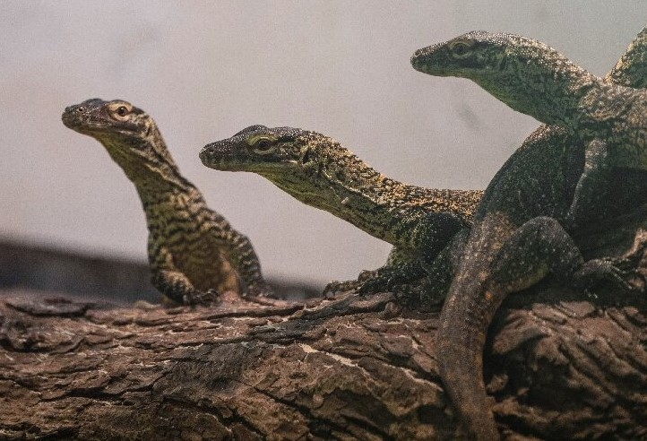

Varanus Komodoensis veya Komodo Ejderi, Varanus cinsine bağlı bir sürüngen türüdür. Endonezya'nın Komodo, Rinca, Flores ve Gili Motang adalarına özgüdür. Maksimum 3 metre (10 ft) uzunluğa ulaşan ve yaklaşık 70 kilograma (150 lb) kadar çıkan mevcut en büyük kertenkele türüdür.
Boyutlarından dolayı, Komodo Ejderi süper yırtıcılardır ve yaşadıkları ekosistemlere hükmederler. Komodo Ejderlerinin diyetindeki, omurgasızlar, kuşlar ve memeliler de dahil olmak üzere, avlarını avlar ve pusuya düşürürler. Zehirli bir ısırıkları olduğu iddia edilmiştir; alt çenede birkaç toksik protein salgılayan iki bez vardır. Bu proteinlerin biyolojik önemi tartışmalıdır, ancak bezlerin bir antikoagülan salgıladığı gösterilmiştir. Komodo Ejderlerinin avlanmadaki grup davranışı sürüngen dünyasında istisnai bir durumdur. Komodo Ejderlerinin diyeti esas olarak Rusa Timorensis oluşur, ancak önemli miktarda leş de yerler.
Komodo Ejderi ilk olarak 1910'da Batılı bilim insanları tarafından tanımlandı. Büyük boyutları ve korkunç ünleri, onları popüler hayvanat bahçelerinde sergilenmelerine neden oldu. Vahşi doğada, insan faaliyetleri nedeniyle yaşam alanları daralan Komodo Ejderi Endonezya yasalarına göre koruma altına alındı ve 1980'de Komodo Ulusal Parkı bu çalışmalara yardımcı olmak için kuruldu. Komodo Ejderi, Eylül 2021'de Uluslararası Doğayı Koruma Birliği (IUCN) tarafından nesli tükenme tehlikesi altındaki türler listesine eklendi.
Özellikler
Vahşi doğada, yetişkin Komodo ejderi genellikle 70 kg (150 lb) ağırlığındadır, ancak yakalanan örnekler genellikle daha ağırdır. Guinness Dünya Rekorları'na göre, ortalama bir yetişkin erkek 79 ile 91 kg (174 ile 201 lb) ağırlığında ve 2,59 m (8,5 ft) boyunda olurken, ortalama bir dişi 68 ile 73 kg (150 ile 161 lb) ağırlığında ve 2,29 metre (7.5 ft) boyundadır.Doğrulanmış en büyük yabani örnek 3,13 metre (10,3 ft) uzunluğunda ve 166 kilogram (366 lb) ağırlındadır.
Komodo ejderinin gövdesi kadar uzun bir kuyruğu ve ayrıca 2,5 cm (1 inç) uzunluğa kadar çıkabilen yaklaşık 60 sıklıkla değişen tırtıklı dişi vardır. Dişleri beslenme sırasında doğal olarak yırtılan dişeti dokusuyla neredeyse tamamen kaplandığı için tükürüğü sıklıkla kanlıdır. Ayrıca uzun, sarı, derinden çatallı bir dili vardır. Komodo ejderinin derisi, bir tür doğal zincir zırh işlevi gören osteoderm adı verilen küçük kemikleri içeren zırhlı pullarla güçlendirilmiştir. Yetişkin Komodo ejderinin başında osteoderm bulunmayan alanlar göz çevresi, burun delikleri, ağız kenarları ve başın üst kısmındaki ışığa duyarlı bir organ olan epifiz gözüdür. Kertenkelelerin tipik olarak bir veya iki farklı osteoderm deseni veya şekline sahip olduğu yerlerde, komodo ejderinde dört tane bulunur: şekil, iz, dendritik ve vermiform. Bu sağlam zırh, Komodo ejderi derisini zayıf bir deri kaynağı yapar. Ek olarak, bu osteodermler, Komodo ejderi yaşlandıkça daha kapsamlı ve değişken hale gelir, kertenkele büyüdükçe daha fazla kemikleşir. Bu osteodermler, kuluçkadan çıkanlarda ve yavrularda bulunmaz; bu, doğal zırhın, yiyecekler ve eşler üzerinde intraspesifik mücadelede koruma için yetişkinler arasındaki yaş ve rekabetin bir ürünü olarak geliştiğini gösterir.

Sınıflandırma
Etimoloji
Komodo Adası'nın yerlileri tarafından Ora , Ouaya Parat(Kara Timsahı) veya Biawak Raksasa(Dev Monitör) olarak anılır.
Tarih
Avrupa'ya ulaşan ilk iki canlı Komodo ejderi, 1927'de açıldığında Londra Hayvanat Bahçesi'ndeki Sürüngen Evi'nde sergilendi. Joan Beauchamp Procter, bu hayvanların esaret altındaki ilk gözlemlerinden bazılarını yaptı ve 1928'de Londra Zooloji Derneği Bilimsel Toplantısında davranışlarını gösterdi.
Komodo ejderi, 1926'da W. Douglas Burden tarafından Komodo Adası'na yapılan bir keşif gezisinin itici faktörüydü. 12 korunmuş örnek ve iki canlı örnekle geri döndükten sonra, bu keşif 1933 filmi King Kong için ilham kaynağı oldu. Örneklerinden üçü doldurulmuş ve halen Amerikan Doğa Tarihi Müzesi'nde sergilenmektedir
Hollandalı ada yönetimi, vahşi doğada sınırlı sayıda birey olduğunu fark ederek kısa sürede spor avcılığını yasakladı ve bilimsel çalışma için alınan birey sayısını büyük ölçüde sınırladı. Araştırmalar Komodo ejderinin beslenme davranışını, üremesini ve vücut ısısını incelediği 1950'ler ve 1960'lara kadar devam etmeyen, İkinci Dünya Savaşı'nın ortaya çıkmasıyla birlikte keşif seferleri durma noktasına geldi. Bu sıralarda, Komodo ejderi hakkında uzun vadeli bir çalışmanın yapılacağı bir keşif gezisi planlandı. Bu görev 1969 yılında Komodo Adası'nda 11 ay kalan Auffenberg ailesine verildi. Kaldıkları süre boyunca Walter Auffenberg ve yardımcısı Putra Sastrawan 50'den fazla Komodo ejderini yakalayıp etiketledi.
Evrim
Komodo ejderinin evrimsel gelişimi, yaklaşık 40 milyon yıl önce Asya'da ortaya çıkan ve Avustralya'ya göç eden Varanus cinsiyle başladı ve burada dev formlara (en büyüğü yakın zamanda soyu tükenmiş Varanus priscusdur) evrimleşti, bu diğer rakip plasentalı etçiller ile rekabetini kolaylaştırdı. Yaklaşık 15 milyon yıl önce (Miyosen), Avustralya ve Güneydoğu Asya'nın kıtasal kara kütleleri arasındaki bir çarpışma, bu daha büyük varanidlerin şimdi Endonezya takımadalarına geri dönmesine ve dağılımlarını Timor adasına kadar genişletmesine izin verdi.
Komodo ejderinin yaklaşık 4 milyon yıl önce Avustralyalı atalarından farklılaştığı düşünülmektedir. Bununla birlikte, Queensland'den gelen son fosil kanıtları, Komodo ejderinin Endonezya'ya yayılmadan önce Avustralya'da evrimleştiğini gösterir.
Son buzul döneminde deniz seviyesinin dramatik bir şekilde düşmesi, Komodo ejderinin kolonileştirdiği geniş kıta sahanlıklarını ortaya çıkardı ve daha sonra deniz seviyeleri yükseldikçe mevcut ada aralığında izole edildi.[8][19] Varanus sivalensis gibi modern Komodo ejderinin benzer büyüklükteki soyu tükenmiş Pliyosen türlerinin fosilleri, Pleistosen'in başlangıcı olan iklim değişikliği ve yokoluş olaylarına kadar memeli etoburları gibi rekabet içeren ortamlarda bile iyi ilerlediklerini gösteren Avrasya'da da bulunmuştur.
Mitokondriyal DNA'nın genetik analizi, Komodo ejderinin, Varanus variusun en yakın akrabası (kardeş takson) olduğunu ve ortak atalarının Yeni Gine'nin Varanus salvadorii oluşturan bir soydan ayrıldığını gösterir.
2021'de yapılan bir araştırma, Miyosen sırasında Komodo ejderinin Avustralya Varanus gouldii atalarıyla melezleştiğini ve böylece Komodo ejderinin bir zamanlar Avustralya'da yaşadığına dair daha fazla kanıt sağladığını göstermişti.[25][26][27] Komodo ejderi ilk olarak Avrupalılar tarafından 1910'da Hollanda sömürge yönetiminden Teğmen van Steyn van Hensbroek'e bir "kara timsahı" söylentileri ulaştığında belgelendi.[8] Java, Bogor'daki Zooloji Müzesi müdürü Peter Ouwens, teğmenden bir fotoğraf, bir deri ve bir koleksiyoncudan iki başka örnek aldıktan sonra konuyla ilgili bir makale yayınladığında 1912'den sonra yaygın bir ün kazandı.